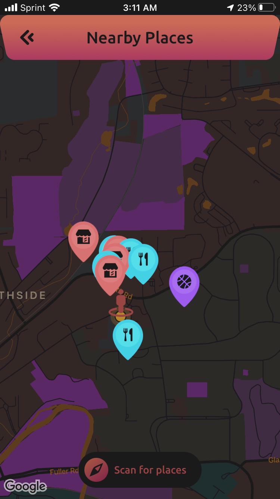
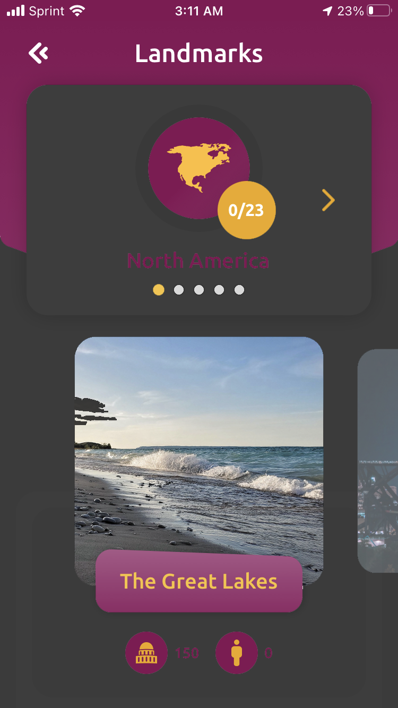
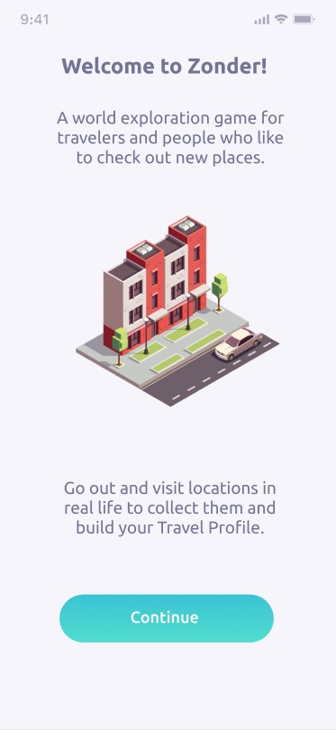

Zonder's CEO floated the idea of having a dark mode for their app. To better ideate this, I inversed the colors of a few Zonder features and played with the hue of a few sections. He particularly enjoyed the black and red, something he didn't think he would like.

Another example of a screen in dark mode. This was a simple approach just to see how Zonder's current colors look against a black background. Are they bright enough? Only one way to tell.

A quick look at our final design submission for our year-long capstone project at U of M. The client realized he wanted an isometric image with text above and below. These images are taken from a free vector site and doctored to fit.